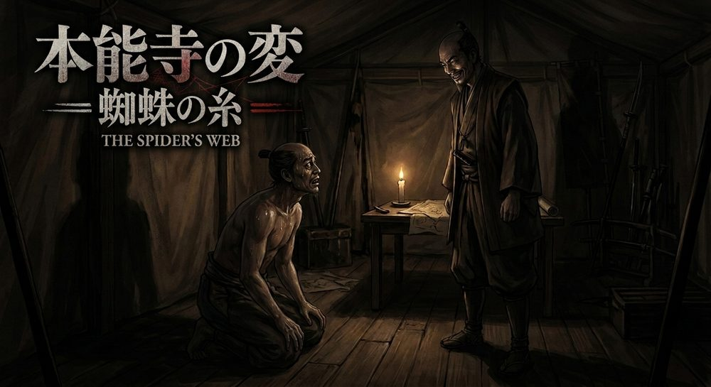

本能寺の変＝蜘蛛の糸｜本編・フルストーリー

【第2回投稿用：本編・フルストーリー】
前回の投稿で紹介した、私のオリジナル新解釈『本能寺の変＝蜘蛛の糸』。
今回は、そのセリフや緊迫感をリアルに表現した【本編フルストーリー】を丸ごと公開します。映画1本を観るような気持ちで、じっくりと味わっていただければ幸いです。
ーーー
『本能寺の変＝蜘蛛の糸』【完全版フルストーリー】
### 第一章：神の堕ちた夜
天正十年六月一日、夜。京都・妙覚寺の奥室。
床に伏しているのは、天下人・織田信長。しかし、その胸には容赦なく突き立てられた一振りの刀があった。刀の柄を握り締め、狂おしいほどの荒い息を吐いているのは、信長の嫡男・織田信忠である。
信長の目は見開かれたまま、動かない。死んでいる。
「……父上。あなたが足利の血を絶やし、神に成り代わろうとする狂気、これ以上織田家を預かる者として見てはいられぬ。天下の平定は、この信忠が引き継ぐ」
天下布武という巨大な重圧が生んだ、あまりにも凄絶な骨肉の争い（親子喧嘩）。その結末はあまりにあっけなかった。
しかし、信長が完全に息絶えたことを確認した瞬間、信忠を襲ったのは、己の犯した罪の大きさと恐怖だった。
闇に紛れて部屋に滑り込んできたのは、信長の容姿が瓜二つの影武者・骨平（こつへい）であった。
「骨平……私は、取り返しのつかないことを」
「案ずるには及びませぬ、信忠様。私は今すぐ本能寺へ入り、御屋形様の身代わりとなります。若殿は二条新御所へ移動し、信長公が急病で身を隠されたと虚報を流し、時間を稼ぎつつ実権を掌握なされませ」
信忠はその言葉にしがみついた。骨平の手引きにより、信長の遺体は妙覚寺の床下に隠され、骨平自身は信長の衣類を纏って本能寺へと向かった。
深夜の本能寺。奥室に一人座す骨平は、格子窓から見える暗闇を見つめていた。
（時間を稼ぎ、か。若殿、哀れなことだ。貴方様を『父親殺し』の狂気へ追い詰めたのが誰かも知らずに……）
骨平は、数年前に羽柴秀吉に拾われた影武者だった。すべては秀吉の密命。
（俺の命はここで終わる。だが、これで天下は筑前守（秀吉）様のもの。名もなき俺の死が、歴史のすべてをひっくり返すのだ）
骨平の胸にあったのは恐怖ではなく、身震いするような全能感だった。
### 第二章：正義の操り人形と、偽りの炎
同日深夜。明智光秀率いる一万三千が京へと進軍していた。
彼の懐には、一時間前に届けられた信忠の側近からの極秘の密書があった。
『信忠様が御謀反！信長公を妙覚寺にて暗殺せり。光秀殿、ただちに京へ入り、逆臣・信忠を討ち取って織田家を救え』
光秀は憤怒に震えていた。「我が敵は、二条新御所の逆臣・信忠ぞ！」
しかし、京の街に突入した明智軍の先陣は、夜闇と緊張から大混乱に陥った。「織田を討て」という命令だけが一人歩きし、あろうことか「信長（影武者）のいる本能寺」をも完全に包囲してしまったのである。
本能寺の奥深く、包囲された骨平は外の騒がしさを聞き、静かに笑った。
「敵は明智か。ははっ、筑前守様、なんと恐ろしい絵を描かれる」
骨平は自ら本堂に火を放った。炎の中、詰め寄る明智の兵たちの前に悠然と姿を現し、信長そのものの声で言い放つ。「是非に及ばず！」
骨平は華々しく自害して果てた。燃え盛る炎は、その遺体が偽物であることを完全に消し去っていく。
一方、二条新御所を急襲した光秀は、信忠を容赦なく追い詰めた。
「信忠様！父殺しの悪逆、ここで償っていただく！」
防戦一方となった信忠は、弁明の機会すら与えられぬまま、「なぜだ、骨平は時間を稼ぎと言ったはず……」と呪詛の言葉を吐きながら自害に追い込まれた。光秀は主君・信長の仇を討ったはずだった。本能寺で死んだのが影武者だとは知る由もなかった。
### 第三章：備中高松の怪物、蜘蛛の糸
「……ほう。信長様は、すでに信忠様に討たれておったか」
備中高松城の陣中。毛利軍の水攻めを指揮していた羽柴秀吉のもとに、京からの早馬が届いた。夜更けの天幕、秀吉の前に控えるのは軍師・黒田官兵衛である。
「筑前様……今すぐ毛利と和睦し、光秀を討てば、天下は——」
「天が味方した？ 官兵衛、お前ともあろう者が、まだそんな寝言を言っているのか」
秀吉の低く、冷え切った声が響いた。蝋燭の炎に照らされた秀吉の目は、すべてを冷徹に見下ろす怪物のそれだった。
「信忠に偽情報を吹き込ませたのは誰だ？ 光秀に偽の密書を送らせたのは誰だ？ 本能寺で死んだ骨平は、どこの誰が信長様に献上した男だ？」
秀吉は歪な笑みを浮かべ、机を指先でトントンと叩いた。
「すべて俺が仕込んだ蜘蛛の糸だ。毛利攻めで俺が京から一番遠くにいるこの瞬間こそが、誰も俺を疑わない最高のアリバイになる。信長, 信忠、そしてこれから悪党として死ぬ光秀。織田家の看板どもが一夜にして全員消える。これ以上の天下泥棒の好機が、他にあるか？」
官兵衛は背筋に激しい悪寒を覚えた。秀吉は、歴史という巨大な舞台の演出家だったのだ。
「官兵衛, 毛利の使者を呼べ。和睦だ。日の出とともに京へ引き返すぞ」
「……御意。この官兵衛、どこまでもお供つかまつる」
秀吉は、何も知らされぬ諸将を「信長公の仇討ち」という偽りの旗印のもとに糾合し、中国大返しへとひた走る。
### 第四章：山崎の決戦と偽りの歴史
天正十年六月十三日、山崎。激しい泥泥の決戦は羽柴軍の優勢で進んでいた。
退路を断たれた光秀は、泥まみれになりながらも、本陣へと突入してきた秀吉と一対一で対峙した。
「秀吉！なぜだ！なぜ俺を『逆賊』と呼ぶ！俺は信長様の仇である信忠を討ったのだ！」
光秀は声を枯らし、正義を叫んだ。
秀吉は哀れみと冷酷さが入り混じった目で光秀を見つめた。
「お前が本能寺で焼いた男が、本当に信長様だと思っているのか？ 本物の信長様はな、妙覚寺で信忠に刺されてもう死んでたんだよ。本能寺で死んだのは俺の影武者だ。お前を動かした密書も、俺が書かせたのさ」
光秀の思考が完全に停止した。
「信長様も信忠様も死んだ。そしてその犯人は、本能寺を焼いた『明智光秀』、お前一人だ。世間の誰もがそう信じている。お前は最初から, 俺の天下簒奪の台本を彩る、ただの大道具だったのさ」
自分が信じた正義、忠義、命を懸けた戦いすべてが、秀吉の道具に過ぎなかった。
「ああ……あああ……！」
光秀の口から出たのは、言葉にならない絶望の絶叫だった。光秀は刀を握る力さえ失い、その場に膝から崩れ落ちた。
「歴史ってのはな、勝った奴が作る物語んだよ」
秀吉は冷たく言い放ち、背を向けた。直後、羽柴の兵たちが一斉に光秀に襲いかかる。
数日後、清洲会議。
主導権を握った秀吉が、織田家の幼い三法師を抱きかかえながら、集まった宿老たちを見下ろしている。
秀吉の口元は満面の笑みを浮かべているが、その目は、すべてを冷徹に支配する「天下人」の目へと完全に変貌していた。
（おわり）
ーーー
ど素人の私の妄想ですが、文字に起こすと自分でもゾクッとする物語になりました。みなさんの感想をぜひ聞かせてください！
#本能寺の変 #歴史新解釈 #映画企画 #羽柴秀吉 #明智光秀 #織田信長 #サスペンス #創作小説 #シナリオプロット
 Android版
Android版
 iPhone版
iPhone版